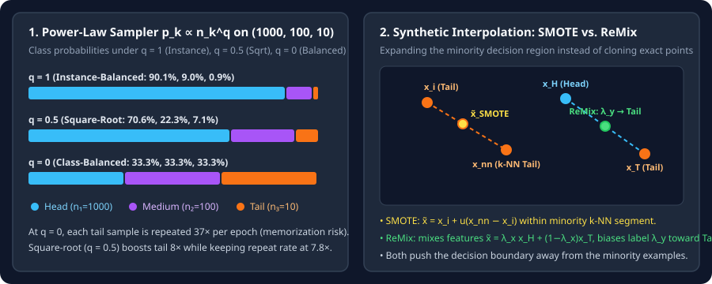

Resampling, Class-Balanced Sampling, and SMOTE / Mixup
Unify instance-balanced, class-balanced, and square-root sampling via $p_k\propto n_k^q$, quantify duplicate memorization on rare classes, and compare feature-space SMOTE with ReMix and Manifold Mixup.
The most direct way to stop majority gradients from dominating a mini-batch is to change which examples enter the batch. Data-level methods either adjust the sampling probabilities of existing examples or synthesize new interpolated examples around the minority class.
1. One equation for all samplers: the $q$-power family
Given $K$ classes with sample counts $n_1,n_2,\dots,n_K$ and total dataset size $N=\sum_{k=1}^K n_k$, the $q$-power sampling family assigns class $k$ the probability
where $q\in[0,1]$ controls the balance between raw instance counts and uniform class representation:
- $q=1$ — Instance-Balanced Sampling ($p_k=n_k/N$): Every training example has an equal $1/N$ chance of being drawn. Head classes dominate in proportion to $n_k$.
- $q=0$ — Class-Balanced Sampling ($p_k=1/K$): Every class has an equal $1/K$ chance of being drawn, and then a random example is picked uniformly within that class.
- $q=1/2$ — Square-Root Sampling ($p_k=\sqrt{n_k}/\sum_j\sqrt{n_j}$): Moderates extreme oversampling while still boosting tail classes significantly.
- Progressive Sampling ($q_t: 1\to 0$): Linearly anneals $q_t=1-t/T$ from $q=1$ (representation learning) at epoch $0$ to $q=0$ (balanced decision boundaries) at final epoch $T$.
2. Worked calculation: duplicate-memorization risk on $(1000, 100, 10)$
Suppose a $3$-class dataset has counts $n=(1000,100,10)$ ($N=1110$ examples per epoch). Compare the class sampling probabilities $p_k(q)$ and the expected number of times each individual tail example ($n_3=10$) is repeated during a single $1110$-sample epoch:
Why does pure class-balanced oversampling ($q=0$) often hurt deep neural networks? Showing the exact same $10$ tail images $37$ times per epoch allows a high-capacity backbone to memorize those $10$ pixel patterns (driving their training loss to $0$), carving tiny, tight islands around the $10$ training points instead of learning a broad tail region.

3. Synthetic interpolation: SMOTE, Borderline-SMOTE, and ReMix
Instead of repeating identical minority points, interpolation methods synthesize new training points to widen the minority decision region:
where ReMix decouples the feature mixing coefficient $\lambda_x$ from the label mixing coefficient $\lambda_y$. When a head example $i$ and a tail example $j$ are mixed ($n_i/n_j\ge\kappa$), ReMix shifts $\lambda_y$ toward $0$ (favoring the tail label $y_j$) whenever $\lambda_x<\tau$:
Why does ReMix work better than raw pixel SMOTE for deep vision and audio models? Linearly averaging raw pixels of two different images $x_i$ and $x_{\text{nn}}$ can produce ghosting artifacts, whereas applying Mixup in hidden feature space (Manifold Mixup, $\tilde h=\lambda h_i+(1-\lambda)h_j$) or biasing the mixed label toward the minority class (ReMix) pushes the head-vs-tail decision boundary away from the minority cluster and toward the majority class.
4. PyTorch implementation: `WeightedRandomSampler` for any $q\in[0,1]$
import torch
from torch.utils.data import DataLoader, WeightedRandomSampler
def build_power_sampler(labels: torch.Tensor, q: float = 0.5) -> WeightedRandomSampler:
"""
q = 1.0 -> instance-balanced
q = 0.5 -> square-root sampling
q = 0.0 -> class-balanced sampling
"""
class_counts = torch.bincount(labels).float().clamp(min=1.0)
# Per-sample weight w(i in k) proportional to n_k^(q - 1)
per_class_sample_weight = class_counts.pow(q - 1.0)
sample_weights = per_class_sample_weight[labels]
return WeightedRandomSampler(
weights=sample_weights,
num_samples=len(labels),
replacement=True,
)5. Questions worth answering
Because class $k$ contains $n_k$ examples! If each of the $n_k$ examples in class $k$ has weight $w_k\propto n_k^{q-1}$, then the total probability of drawing any example from class $k$ is $n_k\cdot w_k\propto n_k\cdot n_k^{q-1}=n_k^q$.
Undersampling reduces training time when $N$ is massive and majority examples are highly redundant, but discarding $99\%$ of majority examples throws away hard boundary negatives that define the decision boundary.